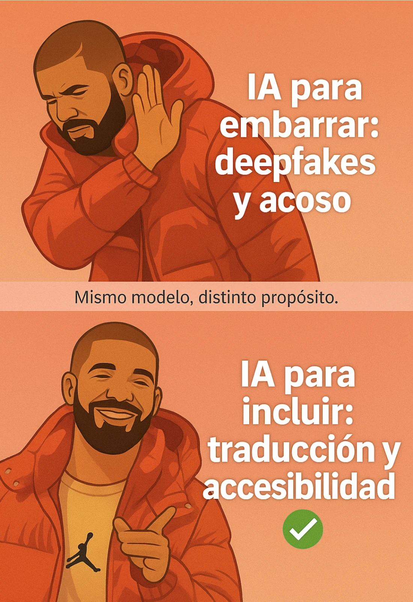

estrategIA #102 ·
La herramienta y su propósito
El contexto
En la edición sobre IA y campañas electorales, una recreación ilustrada de Drake distingue usos opuestos de una misma tecnología. La línea central resume la idea: las decisiones de quienes la emplean pueden dirigirla hacia el acoso o hacia una comunicación más accesible.
Publicado en: estrategIA #102 — Cómo la IA está cambiando las campañas: claves del informe IPIE 2024
Leer el texto de la imagen
IA para embarrar: deepfakes y acoso Mismo modelo, distinto propósito. IA para incluir: traducción y accesibilidad